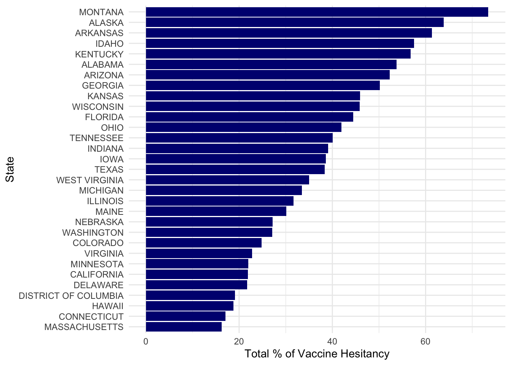
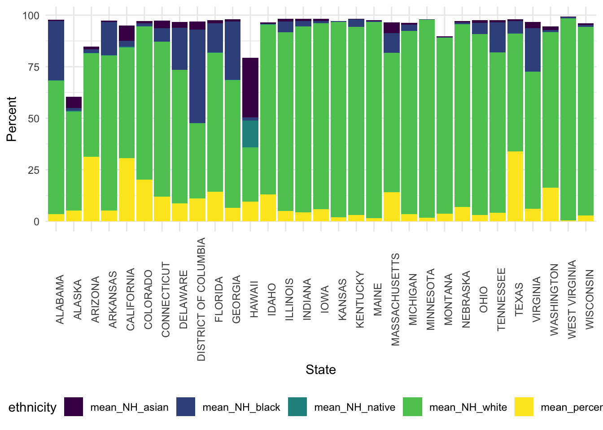

library(tidyverse)
library(readr)
library(rvest)
library(httr)
library(lubridate)vax <- GET("https://data.cdc.gov/resource/q9mh-h2tw.csv") %>% content("parsed")## Rows: 1000 Columns: 21## ── Column specification ────────────────────────────────────────────────────────
## Delimiter: ","
## chr (8): county_name, state, svi_category, cvac_category, geographical_poin...
## dbl (13): fips_code, estimated_hesitant, estimated_hesitant_or_unsure, estim...##
## ℹ Use `spec()` to retrieve the full column specification for this data.
## ℹ Specify the column types or set `show_col_types = FALSE` to quiet this message.vax <- vax %>% select(county_name, state, estimated_hesitant, estimated_hesitant_or_unsure,
estimated_strongly_hesitant, social_vulnerability_index, svi_category,
percent_adults_fully, percent_hispanic, percent_non_hispanic_american,
percent_non_hispanic_asian, percent_non_hispanic_black,
percent_non_hispanic_native, percent_non_hispanic_white)
GET("https://data.cdc.gov/resource/hkhc-f7hg.csv")## Response [https://data.cdc.gov/resource/hkhc-f7hg.csv]
## Date: 2021-12-09 15:13
## Status: 200
## Content-Type: text/csv; charset=UTF-8
## Size: 53 kB
## "data_as_of","start_date","end_date","mmwr_year","mmwr_week","week_ending_dat...
## "2021-12-08T00:00:00.000","2019-12-29T00:00:00.000","2020-01-04T00:00:00.000"...
## "2021-12-08T00:00:00.000","2019-12-29T00:00:00.000","2020-01-04T00:00:00.000"...
## "2021-12-08T00:00:00.000","2019-12-29T00:00:00.000","2020-01-04T00:00:00.000"...
## "2021-12-08T00:00:00.000","2020-01-05T00:00:00.000","2020-01-11T00:00:00.000"...
## "2021-12-08T00:00:00.000","2020-01-05T00:00:00.000","2020-01-11T00:00:00.000"...
## "2021-12-08T00:00:00.000","2020-01-05T00:00:00.000","2020-01-11T00:00:00.000"...
## "2021-12-08T00:00:00.000","2020-01-12T00:00:00.000","2020-01-18T00:00:00.000"...
## "2021-12-08T00:00:00.000","2020-01-12T00:00:00.000","2020-01-18T00:00:00.000"...
## "2021-12-08T00:00:00.000","2020-01-12T00:00:00.000","2020-01-18T00:00:00.000"...
## ...vax_1 <- vax %>% group_by(state) %>% summarise(mean_hesitant = mean(estimated_hesitant, na.rm = T)*100,
mean_hes_unsure = mean(estimated_hesitant_or_unsure, na.rm = T)*100,
mean_strong_hesitant = mean(estimated_strongly_hesitant, na.rm = T)*100, total_hesitant = sum(mean_hes_unsure, mean_strong_hesitant, mean_hesitant)) %>% arrange(desc(total_hesitant)) %>% select(state, total_hesitant, everything())
#making plot about vaccine hesitancy by state (combined mean % of the 3 vax hesitancy categories)
vax_1 %>% ggplot(aes(x = reorder(state, +total_hesitant), y = total_hesitant)) +
geom_col(fill = "Navy blue") +
coord_flip() +
xlab("State")+
ylab("Total % of Vaccine Hesitancy") +
theme_minimal()
# want to look at hesitancy and svi then race
vax_2 <- vax %>% select(state, social_vulnerability_index, svi_category, percent_hispanic, percent_non_hispanic_white, percent_non_hispanic_asian, percent_non_hispanic_black, percent_non_hispanic_native, estimated_hesitant, estimated_hesitant_or_unsure,estimated_strongly_hesitant)
vax_2 <- vax_2 %>% group_by(state) %>%
summarise(mean_hesitant = mean(estimated_hesitant, na.rm = T)*100,
mean_hes_unsure = mean(estimated_hesitant_or_unsure, na.rm = T)*100,
mean_strong_hesitant = mean(estimated_strongly_hesitant, na.rm = T)*100,
total_hesitant = sum(mean_hes_unsure, mean_strong_hesitant, mean_hesitant),
mean_percent_hisp = mean(percent_hispanic, na.rm = T)*100,
mean_NH_black = mean(percent_non_hispanic_black, na.rm = T)*100,
mean_NH_asian = mean(percent_non_hispanic_asian, na.rm = T)*100,
mean_NH_white = mean(percent_non_hispanic_white, na.rm = T)*100,
mean_NH_native = mean(percent_non_hispanic_native, na.rm = T)*100)
vax_2a <- vax_2 %>% group_by(state) %>% pivot_longer(
cols = c(mean_NH_white, mean_NH_black, mean_NH_native, mean_NH_asian, mean_percent_hisp),
names_to = "ethnicity",
values_to = "percent"
)
#not a fan of this plot
vax_2a %>% ggplot(aes(x = state, y = percent, fill = ethnicity)) +
geom_col(position = "stack") +
scale_fill_viridis_d()+
theme(
axis.text.x = element_text(angle = 90)) +
ylab("Percent") +
xlab("State") 
#is there a significant difference of vaccine hesitancy and race/ethnicity - odd result
fit1 <- lm(total_hesitant ~ as.factor(ethnicity), data = vax_2a)
summary(fit1)##
## Call:
## lm(formula = total_hesitant ~ as.factor(ethnicity), data = vax_2a)
##
## Residuals:
## Min 1Q Median 3Q Max
## -21.59 -15.01 0.54 12.40 35.63
##
## Coefficients:
## Estimate Std. Error t value Pr(>|t|)
## (Intercept) 3.782e+01 2.779e+00 13.61 <2e-16
## as.factor(ethnicity)mean_NH_black 2.363e-15 3.931e+00 0.00 1
## as.factor(ethnicity)mean_NH_native 2.984e-16 3.931e+00 0.00 1
## as.factor(ethnicity)mean_NH_white -4.839e-15 3.931e+00 0.00 1
## as.factor(ethnicity)mean_percent_hisp -1.389e-15 3.931e+00 0.00 1
##
## (Intercept) ***
## as.factor(ethnicity)mean_NH_black
## as.factor(ethnicity)mean_NH_native
## as.factor(ethnicity)mean_NH_white
## as.factor(ethnicity)mean_percent_hisp
## ---
## Signif. codes: 0 '***' 0.001 '**' 0.01 '*' 0.05 '.' 0.1 ' ' 1
##
## Residual standard error: 15.47 on 150 degrees of freedom
## Multiple R-squared: 1.876e-30, Adjusted R-squared: -0.02667
## F-statistic: 7.036e-29 on 4 and 150 DF, p-value: 1#looking at strongly hesitant and svi
glimpse(vax)## Rows: 1,000
## Columns: 14
## $ county_name <chr> "Tallapoosa County, Alabama", "Talladega…
## $ state <chr> "ALABAMA", "ALABAMA", "ALABAMA", "ALABAM…
## $ estimated_hesitant <dbl> 0.1806, 0.1783, 0.1735, 0.1735, 0.1805, …
## $ estimated_hesitant_or_unsure <dbl> 0.2400, 0.2350, 0.2357, 0.2357, 0.2313, …
## $ estimated_strongly_hesitant <dbl> 0.1383, 0.1368, 0.1337, 0.1337, 0.1379, …
## $ social_vulnerability_index <dbl> 0.89, 0.87, 0.93, 0.73, 0.70, 0.75, 0.58…
## $ svi_category <chr> "Very High Vulnerability", "Very High Vu…
## $ percent_adults_fully <dbl> 0.305, 0.265, 0.394, 0.308, 0.163, 0.357…
## $ percent_hispanic <dbl> 0.0242, 0.0229, 0.0053, 0.0146, 0.0315, …
## $ percent_non_hispanic_american <dbl> 0.0022, 0.0043, 0.0009, 0.0731, 0.0034, …
## $ percent_non_hispanic_asian <dbl> 0.0036, 0.0061, 0.0003, 0.0025, 0.0016, …
## $ percent_non_hispanic_black <dbl> 0.2697, 0.3237, 0.6938, 0.2354, 0.0073, …
## $ percent_non_hispanic_native <dbl> 0.0000, 0.0003, 0.0000, 0.0000, 0.0005, …
## $ percent_non_hispanic_white <dbl> 0.6887, 0.6263, 0.2684, 0.6495, 0.9370, …fit2 <- lm(estimated_strongly_hesitant ~ social_vulnerability_index + state, data = vax)
summary(fit2)##
## Call:
## lm(formula = estimated_strongly_hesitant ~ social_vulnerability_index +
## state, data = vax)
##
## Residuals:
## Min 1Q Median 3Q Max
## -0.036416 -0.005135 0.000530 0.005610 0.034994
##
## Coefficients:
## Estimate Std. Error t value Pr(>|t|)
## (Intercept) 0.121406 0.001398 86.860 < 2e-16 ***
## social_vulnerability_index 0.015642 0.001219 12.834 < 2e-16 ***
## stateALASKA 0.026715 0.002016 13.252 < 2e-16 ***
## stateARIZONA -0.013286 0.002587 -5.136 3.39e-07 ***
## stateARKANSAS 0.007269 0.001519 4.785 1.97e-06 ***
## stateCALIFORNIA -0.095513 0.001623 -58.859 < 2e-16 ***
## stateCOLORADO -0.080324 0.001623 -49.487 < 2e-16 ***
## stateCONNECTICUT -0.094840 0.003413 -27.791 < 2e-16 ***
## stateDELAWARE -0.094446 0.005338 -17.694 < 2e-16 ***
## stateDISTRICT OF COLUMBIA -0.090491 0.009104 -9.940 < 2e-16 ***
## stateFLORIDA -0.034515 0.001562 -22.097 < 2e-16 ***
## stateGEORGIA -0.029365 0.001316 -22.313 < 2e-16 ***
## stateHAWAII -0.096142 0.004204 -22.871 < 2e-16 ***
## stateIDAHO -0.002712 0.001781 -1.523 0.1281
## stateILLINOIS -0.068089 0.001475 -46.154 < 2e-16 ***
## stateINDIANA -0.044674 0.001688 -26.461 < 2e-16 ***
## stateIOWA -0.048710 0.002336 -20.855 < 2e-16 ***
## stateKANSAS -0.028703 0.009121 -3.147 0.0017 **
## stateKENTUCKY -0.003788 0.003208 -1.181 0.2379
## stateMAINE -0.046847 0.009122 -5.136 3.40e-07 ***
## stateMASSACHUSETTS -0.093780 0.005335 -17.578 < 2e-16 ***
## stateMICHIGAN -0.066495 0.001858 -35.797 < 2e-16 ***
## stateMINNESOTA -0.086034 0.009123 -9.430 < 2e-16 ***
## stateMONTANA 0.047016 0.003614 13.009 < 2e-16 ***
## stateNEBRASKA -0.071042 0.002652 -26.783 < 2e-16 ***
## stateOHIO -0.042573 0.002690 -15.827 < 2e-16 ***
## stateTENNESSEE -0.048805 0.003861 -12.640 < 2e-16 ***
## stateTEXAS -0.051162 0.001485 -34.454 < 2e-16 ***
## stateVIRGINIA -0.086266 0.002011 -42.889 < 2e-16 ***
## stateWASHINGTON -0.072768 0.003589 -20.275 < 2e-16 ***
## stateWEST VIRGINIA -0.050647 0.005333 -9.496 < 2e-16 ***
## stateWISCONSIN -0.031146 0.003633 -8.572 < 2e-16 ***
## ---
## Signif. codes: 0 '***' 0.001 '**' 0.01 '*' 0.05 '.' 0.1 ' ' 1
##
## Residual standard error: 0.009036 on 968 degrees of freedom
## Multiple R-squared: 0.9386, Adjusted R-squared: 0.9367
## F-statistic: 477.7 on 31 and 968 DF, p-value: < 2.2e-16fit2a <- lm(estimated_strongly_hesitant ~ social_vulnerability_index+ percent_hispanic + percent_non_hispanic_white + percent_non_hispanic_asian + percent_non_hispanic_black + percent_non_hispanic_native , data = vax)
summary(fit2a)##
## Call:
## lm(formula = estimated_strongly_hesitant ~ social_vulnerability_index +
## percent_hispanic + percent_non_hispanic_white + percent_non_hispanic_asian +
## percent_non_hispanic_black + percent_non_hispanic_native,
## data = vax)
##
## Residuals:
## Min 1Q Median 3Q Max
## -0.088342 -0.019927 -0.000775 0.018861 0.148517
##
## Coefficients:
## Estimate Std. Error t value Pr(>|t|)
## (Intercept) 0.16878 0.01145 14.737 < 2e-16 ***
## social_vulnerability_index 0.05064 0.00430 11.775 < 2e-16 ***
## percent_hispanic -0.17798 0.01208 -14.731 < 2e-16 ***
## percent_non_hispanic_white -0.09956 0.01139 -8.739 < 2e-16 ***
## percent_non_hispanic_asian -0.29170 0.03123 -9.341 < 2e-16 ***
## percent_non_hispanic_black -0.09647 0.01173 -8.223 6.19e-16 ***
## percent_non_hispanic_native -0.15579 0.09884 -1.576 0.115
## ---
## Signif. codes: 0 '***' 0.001 '**' 0.01 '*' 0.05 '.' 0.1 ' ' 1
##
## Residual standard error: 0.02898 on 993 degrees of freedom
## Multiple R-squared: 0.3523, Adjusted R-squared: 0.3484
## F-statistic: 90.04 on 6 and 993 DF, p-value: < 2.2e-16broom::tidy(fit2a)## # A tibble: 7 × 5
## term estimate std.error statistic p.value
## <chr> <dbl> <dbl> <dbl> <dbl>
## 1 (Intercept) 0.169 0.0115 14.7 1.34e-44
## 2 social_vulnerability_index 0.0506 0.00430 11.8 4.69e-30
## 3 percent_hispanic -0.178 0.0121 -14.7 1.43e-44
## 4 percent_non_hispanic_white -0.0996 0.0114 -8.74 9.84e-18
## 5 percent_non_hispanic_asian -0.292 0.0312 -9.34 6.09e-20
## 6 percent_non_hispanic_black -0.0965 0.0117 -8.22 6.19e-16
## 7 percent_non_hispanic_native -0.156 0.0988 -1.58 1.15e- 1#outcome : binary (hesitant vs. non-hesitant) --> logistic regression
#predictor: social vulnerability index (continuous)
#will do a model adjusting for %race of a county & state
#can also make a binary variable (white & non-white)glimpse(vax)## Rows: 1,000
## Columns: 14
## $ county_name <chr> "Tallapoosa County, Alabama", "Talladega…
## $ state <chr> "ALABAMA", "ALABAMA", "ALABAMA", "ALABAM…
## $ estimated_hesitant <dbl> 0.1806, 0.1783, 0.1735, 0.1735, 0.1805, …
## $ estimated_hesitant_or_unsure <dbl> 0.2400, 0.2350, 0.2357, 0.2357, 0.2313, …
## $ estimated_strongly_hesitant <dbl> 0.1383, 0.1368, 0.1337, 0.1337, 0.1379, …
## $ social_vulnerability_index <dbl> 0.89, 0.87, 0.93, 0.73, 0.70, 0.75, 0.58…
## $ svi_category <chr> "Very High Vulnerability", "Very High Vu…
## $ percent_adults_fully <dbl> 0.305, 0.265, 0.394, 0.308, 0.163, 0.357…
## $ percent_hispanic <dbl> 0.0242, 0.0229, 0.0053, 0.0146, 0.0315, …
## $ percent_non_hispanic_american <dbl> 0.0022, 0.0043, 0.0009, 0.0731, 0.0034, …
## $ percent_non_hispanic_asian <dbl> 0.0036, 0.0061, 0.0003, 0.0025, 0.0016, …
## $ percent_non_hispanic_black <dbl> 0.2697, 0.3237, 0.6938, 0.2354, 0.0073, …
## $ percent_non_hispanic_native <dbl> 0.0000, 0.0003, 0.0000, 0.0000, 0.0005, …
## $ percent_non_hispanic_white <dbl> 0.6887, 0.6263, 0.2684, 0.6495, 0.9370, …#install.packages("leaflet")
library(leaflet)
?spplot## No documentation for 'spplot' in specified packages and libraries:
## you could try '??spplot'#leaflet(vax$county_boundary, "estimated_hesitant")